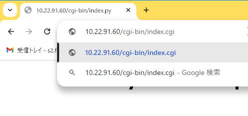

12.webapp Nginx
▶︎
all
running...
目的
組込みアプリケーション開発 12.webapp
構成データ
/media/sf_ArmadilloX1/hwpwm/work/R06_2024/Apllication_debug/text/practice ディレクトリ
･･･/share/ArmadilloX1/hwpwm/work/R06_2024/Application_debug/text/practice/ の構成
user@1204PC-Z490M:/mnt/v/VirtualBoxWork/share/ArmadilloX1/hwpwm/work/R06_2024/Application_debug/text/practice$ tree -aF -L 3
./
└── 12.webapp/
├── devctl.c* <─────課題
├── drivers/ <───── デバイスドライバ
│ ├── leds/ <───── Nginx は デバイスファイルの chmod 必要
│ └── motor/ <───── Nginx は デバイスファイルの chmod 必要
└── image/
├── arrow_l.jpg* <───── 画像ファイル
├── arrow_r.jpg* <─────
├── fan_off.jpg* <─────
├── fan_on.jpg* <─────
├── light_off.gif* <─────
└── light_on.gif* <─────
HTTPプロトコル
参考: 通信プロトコル実装実習(HTTPプロトコルとHTML) のテキスト
CGI
参考:通信プロトコル実装実習(CGIプログラミング)のテキスト
Webサーバー Nginx
Nginx のデータ構成
| 項目 | 場所 | |
|---|---|---|
| ドキュメントルート | /work/linux/nfsroot/var/www/html/ | *.html |
| 画像データ | /work/linux/nfsroot/var/www/html/image/ | *.jpg, *.gif |
| CGI保存場所 | /work/linux/nfsroot/var/www/cgi-bin/ | *.py, *.cgi |
atmark@atde8:~$ tree -aF -L 3 /work/linux/nfsroot/var/www/
atmark@atde8:~$ tree -aF -L 3 /work/linux/nfsroot/var/www/
/work/linux/nfsroot/var/www/
├── cgi-bin/ <───── Nginx FastCGI 保存場所
│ ├── devctl.cgi* <───── 課題
│ ├── index.cgi* <───── テスト用（c言語）
│ └── index.py* <───── テスト用（python）
└── html/ <───── ドキュメントルート
├── image/ <───── 画像ファイル保存場所
│ ├── arrow_l.jpg* <───── 12.webapp/image からコピーしてきた画像ファイル
│ ├── arrow_r.jpg*
│ ├── fan_off.jpg*
│ ├── fan_on.jpg*
│ ├── light_off.gif*
│ └── light_on.gif*
└── index.nginx-debian.html <───── Nginx index.html
3 directories, 8 files
lighttpd アンインストール（アンインストールしなくても良いかもしれない）
root@armadillo:~# apt purge lighttpd
root@armadillo:~# apt purge lighttpd
パッケージリストを読み込んでいます... 完了
依存関係ツリーを作成しています
状態情報を読み取っています... 完了
以下のパッケージが自動でインストールされましたが、もう必要とされていません:
libevent-core-2.1-6 libevent-pthreads-2.1-6 libfam0 libmariadb3 libopts25
mariadb-common mysql-common sntp spawn-fcgi
これを削除するには 'apt autoremove' を利用してください。
以下のパッケージは「削除」されます:
lighttpd* lighttpd-modules-ldap* lighttpd-modules-mysql*
アップグレード: 0 個、新規インストール: 0 個、削除: 3 個、保留: 0 個。
この操作後に 893 kB のディスク容量が解放されます。
続行しますか? [Y/n] Y
(データベースを読み込んでいます ... 現在 44793 個のファイルとディレクトリがインストールされています。)
lighttpd-modules-mysql (1.4.53-4+deb10u3) を削除しています ...
lighttpd-modules-ldap (1.4.53-4+deb10u3) を削除しています ...
lighttpd (1.4.53-4+deb10u3) を削除しています ...
man-db (2.8.5-2+deb10u1) のトリガを処理しています ...
(データベースを読み込んでいます ... 現在 44719 個のファイルとディレクトリがインストールされています。)
lighttpd (1.4.53-4+deb10u3) の設定ファイルを削除しています ...
dpkg: 警告: lighttpd の削除中、ディレクトリ '/etc/lighttpd/conf-enabled' が空でないため削除できませんでした
systemd (241-7~deb10u10) のトリガを処理しています ...
root@armadillo:~#
Nginx インストール
apt install nginx-full
root@armadillo:~# apt install nginx-full
root@armadillo:~# apt install nginx-full
パッケージリストを読み込んでいます... 完了
依存関係ツリーを作成しています
状態情報を読み取っています... 完了
以下のパッケージが自動でインストールされましたが、もう必要とされていません:
libevent-core-2.1-6 libevent-pthreads-2.1-6 libfam0 libmariadb3 libopts25
mariadb-common mysql-common sntp spawn-fcgi
これを削除するには 'apt autoremove' を利用してください。
以下の追加パッケージがインストールされます:
libgd3 libjbig0 libjpeg62-turbo libnginx-mod-http-auth-pam
libnginx-mod-http-dav-ext libnginx-mod-http-echo libnginx-mod-http-geoip
libnginx-mod-http-image-filter libnginx-mod-http-subs-filter
libnginx-mod-http-upstream-fair libnginx-mod-http-xslt-filter
libnginx-mod-mail libnginx-mod-stream libtiff5 libwebp6 libxslt1.1
nginx-common
提案パッケージ:
libgd-tools fcgiwrap nginx-doc ssl-cert
以下のパッケージが新たにインストールされます:
libgd3 libjbig0 libjpeg62-turbo libnginx-mod-http-auth-pam
libnginx-mod-http-dav-ext libnginx-mod-http-echo libnginx-mod-http-geoip
libnginx-mod-http-image-filter libnginx-mod-http-subs-filter
libnginx-mod-http-upstream-fair libnginx-mod-http-xslt-filter
libnginx-mod-mail libnginx-mod-stream libtiff5 libwebp6 libxslt1.1
nginx-common nginx-full
アップグレード: 0 個、新規インストール: 18 個、削除: 0 個、保留: 0 個。
2,566 kB のアーカイブを取得する必要があります。
この操作後に追加で 4,428 kB のディスク容量が消費されます。
続行しますか? [Y/n] Y
取得:1 http://archive.debian.org/debian buster/main armhf libjpeg62-turbo armhf 1:1.5.2-2+deb10u1 [113 kB]
取得:2 http://archive.debian.org/debian buster/main armhf libjbig0 armhf 2.1-3.1+b2 [28.4 kB]
取得:3 http://security.debian.org buster/updates/main armhf libwebp6 armhf 0.6.1-2+deb10u3 [230 kB]
取得:4 http://security.debian.org buster/updates/main armhf libtiff5 armhf 4.1.0+git191117-2~deb10u9 [254 kB]
取得:5 http://security.debian.org buster/updates/main armhf libgd3 armhf 2.2.5-5.2+deb10u1 [117 kB]
取得:6 http://security.debian.org buster/updates/main armhf nginx-common all 1.14.2-2+deb10u5 [121 kB]
取得:7 http://security.debian.org buster/updates/main armhf libnginx-mod-http-auth-pam armhf 1.14.2-2+deb10u5 [92.5 kB]
取得:8 http://security.debian.org buster/updates/main armhf libxslt1.1 armhf 1.1.32-2.2~deb10u2 [217 kB]
取得:9 http://security.debian.org buster/updates/main armhf libnginx-mod-http-dav-ext armhf 1.14.2-2+deb10u5 [99.2 kB]
取得:10 http://security.debian.org buster/updates/main armhf libnginx-mod-http-echo armhf 1.14.2-2+deb10u5 [102 kB]
取得:11 http://security.debian.org buster/updates/main armhf libnginx-mod-http-geoip armhf 1.14.2-2+deb10u5 [93.7 kB]
取得:12 http://security.debian.org buster/updates/main armhf libnginx-mod-http-image-filter armhf 1.14.2-2+deb10u5 [96.9 kB]
取得:13 http://security.debian.org buster/updates/main armhf libnginx-mod-http-subs-filter armhf 1.14.2-2+deb10u5 [95.6 kB]
取得:14 http://security.debian.org buster/updates/main armhf libnginx-mod-http-upstream-fair armhf 1.14.2-2+deb10u5 [95.6 kB]
取得:15 http://security.debian.org buster/updates/main armhf libnginx-mod-http-xslt-filter armhf 1.14.2-2+deb10u5 [95.2 kB]
取得:16 http://security.debian.org buster/updates/main armhf libnginx-mod-mail armhf 1.14.2-2+deb10u5 [122 kB]
取得:17 http://security.debian.org buster/updates/main armhf libnginx-mod-stream armhf 1.14.2-2+deb10u5 [139 kB]
取得:18 http://security.debian.org buster/updates/main armhf nginx-full armhf 1.14.2-2+deb10u5 [453 kB]
2,566 kB を 1秒 で取得しました (2,043 kB/s)
debconf: delaying package configuration, since apt-utils is not installed
以前に未選択のパッケージ libjpeg62-turbo:armhf を選択しています。
(データベースを読み込んでいます ... 現在 44688 個のファイルとディレクトリがインストールされています。)
.../00-libjpeg62-turbo_1%3a1.5.2-2+deb10u1_armhf.deb を展開する準備をしています ...
libjpeg62-turbo:armhf (1:1.5.2-2+deb10u1) を展開しています...
以前に未選択のパッケージ libjbig0:armhf を選択しています。
.../01-libjbig0_2.1-3.1+b2_armhf.deb を展開する準備をしています ...
libjbig0:armhf (2.1-3.1+b2) を展開しています...
以前に未選択のパッケージ libwebp6:armhf を選択しています。
.../02-libwebp6_0.6.1-2+deb10u3_armhf.deb を展開する準備をしています ...
libwebp6:armhf (0.6.1-2+deb10u3) を展開しています...
以前に未選択のパッケージ libtiff5:armhf を選択しています。
.../03-libtiff5_4.1.0+git191117-2~deb10u9_armhf.deb を展開する準備をしています ...
libtiff5:armhf (4.1.0+git191117-2~deb10u9) を展開しています...
以前に未選択のパッケージ libgd3:armhf を選択しています。
.../04-libgd3_2.2.5-5.2+deb10u1_armhf.deb を展開する準備をしています ...
libgd3:armhf (2.2.5-5.2+deb10u1) を展開しています...
以前に未選択のパッケージ nginx-common を選択しています。
.../05-nginx-common_1.14.2-2+deb10u5_all.deb を展開する準備をしています ...
nginx-common (1.14.2-2+deb10u5) を展開しています...
以前に未選択のパッケージ libnginx-mod-http-auth-pam を選択しています。
.../06-libnginx-mod-http-auth-pam_1.14.2-2+deb10u5_armhf.deb を展開する準備をしています ...
libnginx-mod-http-auth-pam (1.14.2-2+deb10u5) を展開しています...
以前に未選択のパッケージ libxslt1.1:armhf を選択しています。
.../07-libxslt1.1_1.1.32-2.2~deb10u2_armhf.deb を展開する準備をしています ...
libxslt1.1:armhf (1.1.32-2.2~deb10u2) を展開しています...
以前に未選択のパッケージ libnginx-mod-http-dav-ext を選択しています。
.../08-libnginx-mod-http-dav-ext_1.14.2-2+deb10u5_armhf.deb を展開する準備をしています ...
libnginx-mod-http-dav-ext (1.14.2-2+deb10u5) を展開しています...
以前に未選択のパッケージ libnginx-mod-http-echo を選択しています。
.../09-libnginx-mod-http-echo_1.14.2-2+deb10u5_armhf.deb を展開する準備をしています ...
libnginx-mod-http-echo (1.14.2-2+deb10u5) を展開しています...
以前に未選択のパッケージ libnginx-mod-http-geoip を選択しています。
.../10-libnginx-mod-http-geoip_1.14.2-2+deb10u5_armhf.deb を展開する準備をしています ...
libnginx-mod-http-geoip (1.14.2-2+deb10u5) を展開しています...
以前に未選択のパッケージ libnginx-mod-http-image-filter を選択しています。
.../11-libnginx-mod-http-image-filter_1.14.2-2+deb10u5_armhf.deb を展開する準備をしています ...
libnginx-mod-http-image-filter (1.14.2-2+deb10u5) を展開しています...
以前に未選択のパッケージ libnginx-mod-http-subs-filter を選択しています。
.../12-libnginx-mod-http-subs-filter_1.14.2-2+deb10u5_armhf.deb を展開する準備をしています ...
libnginx-mod-http-subs-filter (1.14.2-2+deb10u5) を展開しています...
以前に未選択のパッケージ libnginx-mod-http-upstream-fair を選択しています。
.../13-libnginx-mod-http-upstream-fair_1.14.2-2+deb10u5_armhf.deb を展開する準備をしています ...
libnginx-mod-http-upstream-fair (1.14.2-2+deb10u5) を展開しています...
以前に未選択のパッケージ libnginx-mod-http-xslt-filter を選択しています。
.../14-libnginx-mod-http-xslt-filter_1.14.2-2+deb10u5_armhf.deb を展開する準備をしています ...
libnginx-mod-http-xslt-filter (1.14.2-2+deb10u5) を展開しています...
以前に未選択のパッケージ libnginx-mod-mail を選択しています。
.../15-libnginx-mod-mail_1.14.2-2+deb10u5_armhf.deb を展開する準備をしています ...
libnginx-mod-mail (1.14.2-2+deb10u5) を展開しています...
以前に未選択のパッケージ libnginx-mod-stream を選択しています。
.../16-libnginx-mod-stream_1.14.2-2+deb10u5_armhf.deb を展開する準備をしています ...
libnginx-mod-stream (1.14.2-2+deb10u5) を展開しています...
以前に未選択のパッケージ nginx-full を選択しています。
.../17-nginx-full_1.14.2-2+deb10u5_armhf.deb を展開する準備をしています ...
nginx-full (1.14.2-2+deb10u5) を展開しています...
nginx-common (1.14.2-2+deb10u5) を設定しています ...
Created symlink /etc/systemd/system/multi-user.target.wants/nginx.service → /lib/systemd/system/nginx.service.
libjbig0:armhf (2.1-3.1+b2) を設定しています ...
libjpeg62-turbo:armhf (1:1.5.2-2+deb10u1) を設定しています ...
libnginx-mod-http-auth-pam (1.14.2-2+deb10u5) を設定しています ...
libnginx-mod-http-geoip (1.14.2-2+deb10u5) を設定しています ...
libwebp6:armhf (0.6.1-2+deb10u3) を設定しています ...
libnginx-mod-http-echo (1.14.2-2+deb10u5) を設定しています ...
libnginx-mod-http-subs-filter (1.14.2-2+deb10u5) を設定しています ...
libxslt1.1:armhf (1.1.32-2.2~deb10u2) を設定しています ...
libtiff5:armhf (4.1.0+git191117-2~deb10u9) を設定しています ...
libnginx-mod-http-dav-ext (1.14.2-2+deb10u5) を設定しています ...
libnginx-mod-mail (1.14.2-2+deb10u5) を設定しています ...
libnginx-mod-stream (1.14.2-2+deb10u5) を設定しています ...
libnginx-mod-http-upstream-fair (1.14.2-2+deb10u5) を設定しています ...
libnginx-mod-http-xslt-filter (1.14.2-2+deb10u5) を設定しています ...
libgd3:armhf (2.2.5-5.2+deb10u1) を設定しています ...
libnginx-mod-http-image-filter (1.14.2-2+deb10u5) を設定しています ...
nginx-full (1.14.2-2+deb10u5) を設定しています ...
libc-bin (2.28-10+deb10u4) のトリガを処理しています ...
systemd (241-7~deb10u10) のトリガを処理しています ...
man-db (2.8.5-2+deb10u1) のトリガを処理しています ...
root@armadillo:~#
Nginx 状態確認
root@armadillo:~# systemctl status nginx.service
root@armadillo:~# systemctl status nginx.service
● nginx.service - A high performance web server and a reverse proxy server
Loaded: loaded (/lib/systemd/system/nginx.service; enabled; vendor preset: ena
Active: active (running) since Sat 2024-07-13 17:38:51 JST; 28s ago
Docs: man:nginx(8)
Main PID: 3696 (nginx)
Memory: 18.0M
CGroup: /system.slice/nginx.service
├─3696 nginx: master process /usr/sbin/nginx -g daemon on; master_proc
├─3698 nginx: worker process
└─3699 nginx: worker process
7月 13 17:38:48 armadillo systemd[1]: Starting A high performance web server and
7月 13 17:38:51 armadillo systemd[1]: Started A high performance web server and
root@armadillo:~#
Nginx バージョンチェック
root@armadillo:~# nginx -v
root@armadillo:~# nginx -v
nginx version: nginx/1.14.2
Nginx 設定ファイルの構文チェック
root@armadillo:~# nginx -t
root@armadillo:~# nginx -t
nginx: the configuration file /etc/nginx/nginx.conf syntax is ok
nginx: configuration file /etc/nginx/nginx.conf test is successful
Nginx 動作確認
Welcome ページ
http://10.22.91.60

index.html の場所
root@armadillo:~# ls -al /var/www/html/
root@armadillo:~# ls -al /var/www/html/
合計 12
drwxr-xr-x 2 root root 4096 7月 13 17:38 .
drwxr-xr-x 4 root root 4096 7月 13 18:02 ..
-rw-r--r-- 1 root root 612 7月 13 17:38 index.nginx-debian.html
root@armadillo:~#
Nginx index.py の動作確認
index.py
apt install fcgiwrap
root@armadillo:~# apt install fcgiwrap
root@armadillo:~# apt install fcgiwrap
パッケージリストを読み込んでいます... 完了
依存関係ツリーを作成しています
状態情報を読み取っています... 完了
以下のパッケージが自動でインストールされましたが、もう必要とされていません:
libevent-core-2.1-6 libevent-pthreads-2.1-6 libfam0 libmariadb3 libopts25
mariadb-common mysql-common sntp
これを削除するには 'apt autoremove' を利用してください。
以下の追加パッケージがインストールされます:
libfcgi-bin libfcgi0ldbl
以下のパッケージが新たにインストールされます:
fcgiwrap libfcgi-bin libfcgi0ldbl
アップグレード: 0 個、新規インストール: 3 個、削除: 0 個、保留: 0 個。
180 kB のアーカイブを取得する必要があります。
この操作後に追加で 535 kB のディスク容量が消費されます。
続行しますか? [Y/n] Y
取得:1 http://archive.debian.org/debian buster/main armhf libfcgi0ldbl armhf 2.4.0-10 [151 kB]
取得:2 http://archive.debian.org/debian buster/main armhf fcgiwrap armhf 1.1.0-12 [17.4 kB]
取得:3 http://archive.debian.org/debian buster/main armhf libfcgi-bin armhf 2.4.0-10 [11.6 kB]
180 kB を 2秒 で取得しました (80.7 kB/s)
debconf: delaying package configuration, since apt-utils is not installed
以前に未選択のパッケージ libfcgi0ldbl:armhf を選択しています。
(データベースを読み込んでいます ... 現在 44856 個のファイルとディレクトリがインストールされています。)
.../libfcgi0ldbl_2.4.0-10_armhf.deb を展開する準備をしています ...
libfcgi0ldbl:armhf (2.4.0-10) を展開しています...
以前に未選択のパッケージ fcgiwrap を選択しています。
.../fcgiwrap_1.1.0-12_armhf.deb を展開する準備をしています ...
fcgiwrap (1.1.0-12) を展開しています...
以前に未選択のパッケージ libfcgi-bin を選択しています。
.../libfcgi-bin_2.4.0-10_armhf.deb を展開する準備をしています ...
libfcgi-bin (2.4.0-10) を展開しています...
libfcgi0ldbl:armhf (2.4.0-10) を設定しています ...
libfcgi-bin (2.4.0-10) を設定しています ...
fcgiwrap (1.1.0-12) を設定しています ...
Created symlink /etc/systemd/system/sockets.target.wants/fcgiwrap.socket → /lib/systemd/system/fcgiwrap.socket.
man-db (2.8.5-2+deb10u1) のトリガを処理しています ...
libc-bin (2.28-10+deb10u4) のトリガを処理しています ...
systemd (241-7~deb10u10) のトリガを処理しています ...
root@armadillo:~#
fcgiwrap.conf の作成
root@armadillo:~# cp /usr/share/doc/fcgiwrap/examples/nginx.conf /etc/nginx/fcgiwrap.conf
root@armadillo:~# cp /usr/share/doc/fcgiwrap/examples/nginx.conf /etc/nginx/fcgiwrap.conf

fcgiwrap.conf（編集前）
/work/linux/nfsroot/etc/nginx/fcgiwrap.conf
# Include this file on your nginx.conf to support debian cgi-bin scripts using
# fcgiwrap
location /cgi-bin/ {
# Disable gzip (it makes scripts feel slower since they have to complete
# before getting gzipped)
gzip off;
# Set the root to /usr/lib (inside this location this means that we are
# giving access to the files under /usr/lib/cgi-bin)
root /usr/lib;
# Fastcgi socket
fastcgi_pass unix:/var/run/fcgiwrap.socket;
# Fastcgi parameters, include the standard ones
include /etc/nginx/fastcgi_params;
# Adjust non standard parameters (SCRIPT_FILENAME)
fastcgi_param SCRIPT_FILENAME /usr/lib$fastcgi_script_name;
}
fcgiwrap.conf（編集後）
/work/linux/nfsroot/etc/nginx/fcgiwrap.conf
# Include this file on your nginx.conf to support debian cgi-bin scripts using
# fcgiwrap
location /cgi-bin/ {
# Disable gzip (it makes scripts feel slower since they have to complete
# before getting gzipped)
gzip off;
# Set the root to /usr/lib (inside this location this means that we are
# giving access to the files under /usr/lib/cgi-bin)
root /var/www; <───────────────────────────────────────────────────────── 変更
# Fastcgi socket
fastcgi_pass unix:/var/run/fcgiwrap.socket;
# Fastcgi parameters, include the standard ones
include /etc/nginx/fastcgi_params;
# Adjust non standard parameters (SCRIPT_FILENAME)
#fastcgi_param SCRIPT_FILENAME /usr/lib$fastcgi_script_name;
fastcgi_param SCRIPT_FILENAME $document_root$fastcgi_script_name; <──────── 変更
}
root@armadillo:~# cat /etc/nginx/fcgiwrap.conf
root@armadillo:~# cat /etc/nginx/fcgiwrap.conf
# Include this file on your nginx.conf to support debian cgi-bin scripts using
# fcgiwrap
location /cgi-bin/ {
# Disable gzip (it makes scripts feel slower since they have to complete
# before getting gzipped)
gzip off;
# Set the root to /usr/lib (inside this location this means that we are
# giving access to the files under /usr/lib/cgi-bin)
root /var/www;
# Fastcgi socket
fastcgi_pass unix:/var/run/fcgiwrap.socket;
# Fastcgi parameters, include the standard ones
include /etc/nginx/fastcgi_params;
# Adjust non standard parameters (SCRIPT_FILENAME)
#fastcgi_param SCRIPT_FILENAME /usr/lib$fastcgi_script_name;
fastcgi_param SCRIPT_FILENAME $document_root$fastcgi_script_name;
}
cgi-bin ディレクトリ作成 & パーミション変更
root@armadillo:~# mkdir /var/www/cgi-bin
root@armadillo:~# mkdir /var/www/cgi-bin
root@armadillo:~# chmod 755 /var/www/cgi-bin/
root@armadillo:~# chmod 755 /var/www/cgi-bin/
root@armadillo:~# ls -al
root@armadillo:~# ls -al /var/www/
合計 16
drwxr-xr-x 4 root root 4096 7月 13 18:02 .
drwxr-xr-x 12 root root 4096 7月 13 17:38 ..
drwxr-xr-x 2 root root 4096 7月 13 18:02 cgi-bin
drwxr-xr-x 2 root root 4096 7月 13 17:38 html
sites-availabel/default の編集
編集前
/work/linux/nfsroot/etc/nginx/sites-available/default
##
# You should look at the following URL's in order to grasp a solid understanding
# of Nginx configuration files in order to fully unleash the power of Nginx.
# https://www.nginx.com/resources/wiki/start/
# https://www.nginx.com/resources/wiki/start/topics/tutorials/config_pitfalls/
# https://wiki.debian.org/Nginx/DirectoryStructure
#
# In most cases, administrators will remove this file from sites-enabled/ and
# leave it as reference inside of sites-available where it will continue to be
# updated by the nginx packaging team.
#
# This file will automatically load configuration files provided by other
# applications, such as Drupal or Wordpress. These applications will be made
# available underneath a path with that package name, such as /drupal8.
#
# Please see /usr/share/doc/nginx-doc/examples/ for more detailed examples.
##
# Default server configuration
#
server {
listen 80 default_server;
listen [::]:80 default_server;
# SSL configuration
#
# listen 443 ssl default_server;
# listen [::]:443 ssl default_server;
#
# Note: You should disable gzip for SSL traffic.
# See: https://bugs.debian.org/773332
#
# Read up on ssl_ciphers to ensure a secure configuration.
# See: https://bugs.debian.org/765782
#
# Self signed certs generated by the ssl-cert package
# Don't use them in a production server!
#
# include snippets/snakeoil.conf;
root /var/www/html;
# Add index.php to the list if you are using PHP
index index.html index.htm index.nginx-debian.html;
server_name _;
location / {
# First attempt to serve request as file, then
# as directory, then fall back to displaying a 404.
try_files $uri $uri/ =404;
}
# pass PHP scripts to FastCGI server
#
#location ~ \.php$ {
# include snippets/fastcgi-php.conf;
#
# # With php-fpm (or other unix sockets):
# fastcgi_pass unix:/run/php/php7.3-fpm.sock;
# # With php-cgi (or other tcp sockets):
# fastcgi_pass 127.0.0.1:9000;
#}
# deny access to .htaccess files, if Apache's document root
# concurs with nginx's one
#
#location ~ /\.ht {
# deny all;
#}
}
# Virtual Host configuration for example.com
#
# You can move that to a different file under sites-available/ and symlink that
# to sites-enabled/ to enable it.
#
#server {
# listen 80;
# listen [::]:80;
#
# server_name example.com;
#
# root /var/www/example.com;
# index index.html;
#
# location / {
# try_files $uri $uri/ =404;
# }
#}
編集後
/work/linux/nfsroot/etc/nginx/sites-available/default
##
# You should look at the following URL's in order to grasp a solid understanding
# of Nginx configuration files in order to fully unleash the power of Nginx.
# https://www.nginx.com/resources/wiki/start/
# https://www.nginx.com/resources/wiki/start/topics/tutorials/config_pitfalls/
# https://wiki.debian.org/Nginx/DirectoryStructure
#
# In most cases, administrators will remove this file from sites-enabled/ and
# leave it as reference inside of sites-available where it will continue to be
# updated by the nginx packaging team.
#
# This file will automatically load configuration files provided by other
# applications, such as Drupal or Wordpress. These applications will be made
# available underneath a path with that package name, such as /drupal8.
#
# Please see /usr/share/doc/nginx-doc/examples/ for more detailed examples.
##
# Default server configuration
#
server {
listen 80 default_server;
listen [::]:80 default_server;
# SSL configuration
#
# listen 443 ssl default_server;
# listen [::]:443 ssl default_server;
#
# Note: You should disable gzip for SSL traffic.
# See: https://bugs.debian.org/773332
#
# Read up on ssl_ciphers to ensure a secure configuration.
# See: https://bugs.debian.org/765782
#
# Self signed certs generated by the ssl-cert package
# Don't use them in a production server!
#
# include snippets/snakeoil.conf;
root /var/www/html;
# Add index.php to the list if you are using PHP
index index.html index.htm index.nginx-debian.html;
server_name myAlmadilloX1.chugoku-pc.ac.jp; <───────────────────────────────────────── 適当
location / {
# First attempt to serve request as file, then
# as directory, then fall back to displaying a 404.
try_files $uri $uri/ =404;
}
# pass PHP scripts to FastCGI server
#
#location ~ \.php$ {
# include snippets/fastcgi-php.conf;
#
# # With php-fpm (or other unix sockets):
# fastcgi_pass unix:/run/php/php7.3-fpm.sock;
# # With php-cgi (or other tcp sockets):
# fastcgi_pass 127.0.0.1:9000;
#}
# deny access to .htaccess files, if Apache's document root
# concurs with nginx's one
#
#location ~ /\.ht {
# deny all;
#}
include fcgiwrap.conf; <───────────────────────────────────────── 追加
# Virtual Host configuration for example.com
#
# You can move that to a different file under sites-available/ and symlink that
# to sites-enabled/ to enable it.
#
#server {
# listen 80;
# listen [::]:80;
#
# server_name example.com;
#
# root /var/www/example.com;
# index index.html;
#
# location / {
# try_files $uri $uri/ =404;
# }
#}
チェック
root@armadillo:~# nginx -t
root@armadillo:~# nginx -t
nginx: the configuration file /etc/nginx/nginx.conf syntax is ok
nginx: configuration file /etc/nginx/nginx.conf test is successful
nginex 再起動
root@armadillo:~# systemctl restart nginx.service
root@armadillo:~# systemctl restart nginx.service
nginx 状態確認
root@armadillo:~# systemctl status nginx.service
root@armadillo:~# systemctl status nginx.service
● nginx.service - A high performance web server and a reverse proxy server
Loaded: loaded (/lib/systemd/system/nginx.service; enabled; vendor preset: ena
Active: active (running) since Sat 2024-07-13 18:19:58 JST; 1min 26s ago
Docs: man:nginx(8)
Process: 4396 ExecStartPre=/usr/sbin/nginx -t -q -g daemon on; master_process o
Process: 4418 ExecStart=/usr/sbin/nginx -g daemon on; master_process on; (code=
Main PID: 4423 (nginx)
Memory: 2.0M
CGroup: /system.slice/nginx.service
├─4423 nginx: master process /usr/sbin/nginx -g daemon on; master_proc
├─4425 nginx: worker process
└─4426 nginx: worker process
7月 13 18:19:58 armadillo systemd[1]: Starting A high performance web server and
7月 13 18:19:58 armadillo systemd[1]: nginx.service: Failed to parse PID from fi
7月 13 18:19:58 armadillo systemd[1]: Started A high performance web server and
root@armadillo:~#
index.py
/var/www/cgi-bin/index.py の新規作成
#!/usr/bin/env python
print "Content-type: text/html\n\n"
print "<html>\n<body>"
print "<div style=\"width: 100%; font-size: 40px; font-weight: bold; text-align: center;\">"
print "Python Script Test Page"
print "</div>\n</body>\n</html>"
root@armadillo:/var/www/cgi-bin# touch index.py
root@armadillo:~# cd /var/www/cgi-bin/
root@armadillo:/var/www/cgi-bin# touch index.py
root@armadillo:/var/www/cgi-bin# cat index.py
root@armadillo:/var/www/cgi-bin# cat index.py
#!/usr/bin/env python
print "Content-type: text/html\n\n"
print "<html>\n<body>"
print "<div style=\"width: 100%; font-size: 40px; font-weight: bold; text-align: center;\">"
print "Python Script Test Page"
print "</div>\n</body>\n</html>"
パーミションの変更
root@armadillo:/var/www/cgi-bin# chmod 755 index.py
root@armadillo:/var/www/cgi-bin# chmod 755 index.py
root@armadillo:/var/www/cgi-bin# ls -al
合計 12
drwxr-xr-x 2 root root 4096 7月 13 18:23 .
drwxr-xr-x 4 root root 4096 7月 13 18:02 ..
-rwxr-xr-x 1 root root 240 7月 13 18:24 index.py
index.py 確認
http://10.22.91.60/cgi-bin/index.py

Nginx + FastCGI
/work/linux/nfsroot/etc/nginx/fcgiwrap.conf （再編集）
/work/linux/nfsroot/etc/nginx/fcgiwrap.conf
# Include this file on your nginx.conf to support debian cgi-bin scripts using
# fcgiwrap
location /cgi-bin/ {
# Disable gzip (it makes scripts feel slower since they have to complete
# before getting gzipped)
gzip off;
# Set the root to /usr/lib (inside this location this means that we are
# giving access to the files under /usr/lib/cgi-bin)
root /var/www;
# Fastcgi socket
fastcgi_pass unix:/var/run/fcgiwrap.socket;
# Fastcgi parameters, include the standard ones
include /etc/nginx/fastcgi_params;
# Adjust non standard parameters (SCRIPT_FILENAME)
#fastcgi_param SCRIPT_FILENAME /usr/lib$fastcgi_script_name;
fastcgi_param SCRIPT_FILENAME $document_root$fastcgi_script_name;
fastcgi_index index.cgi; <──────────────────────────────────────── 追加
}
apt install libfcgi-dev（不要かも）
root@armadillo:~# apt install libfcgi-dev
root@armadillo:~# apt install libfcgi-dev
パッケージリストを読み込んでいます... 完了
依存関係ツリーを作成しています
状態情報を読み取っています... 完了
以下のパッケージが自動でインストールされましたが、もう必要とされていません:
libevent-core-2.1-6 libevent-pthreads-2.1-6 libfam0 libmariadb3 libopts25
mariadb-common mysql-common sntp
これを削除するには 'apt autoremove' を利用してください。
以下のパッケージが新たにインストールされます:
libfcgi-dev
アップグレード: 0 個、新規インストール: 1 個、削除: 0 個、保留: 0 個。
29.6 kB のアーカイブを取得する必要があります。
この操作後に追加で 106 kB のディスク容量が消費されます。
取得:1 http://archive.debian.org/debian buster/main armhf libfcgi-dev armhf 2.4.0-10 [29.6 kB]
29.6 kB を 1秒 で取得しました (27.7 kB/s)
debconf: delaying package configuration, since apt-utils is not installed
以前に未選択のパッケージ libfcgi-dev:armhf を選択しています。
(データベースを読み込んでいます ... 現在 44913 個のファイルとディレクトリがインストールされています。)
.../libfcgi-dev_2.4.0-10_armhf.deb を展開する準備をしています ...
libfcgi-dev:armhf (2.4.0-10) を展開しています...
libfcgi-dev:armhf (2.4.0-10) を設定しています ...
root@armadillo:~#
apt install spawn-fcgi（不要かも要調査）
root@armadillo:~# apt install spawn-fcgi
root@armadillo:~# apt install spawn-fcgi
パッケージリストを読み込んでいます... 完了
依存関係ツリーを作成しています
状態情報を読み取っています... 完了
spawn-fcgi はすでに最新バージョン (1.6.4-2) です。
spawn-fcgi は手動でインストールしたと設定されました。
以下のパッケージが自動でインストールされましたが、もう必要とされていません:
libevent-core-2.1-6 libevent-pthreads-2.1-6 libfam0 libmariadb3 libopts25
mariadb-common mysql-common sntp
これを削除するには 'apt autoremove' を利用してください。
アップグレード: 0 個、新規インストール: 0 個、削除: 0 個、保留: 0 個。
root@armadillo:~#
Nginx再起動
root@armadillo:~# nginx -t
root@armadillo:~# nginx -t
nginx: the configuration file /etc/nginx/nginx.conf syntax is ok
nginx: configuration file /etc/nginx/nginx.conf test is successful
root@armadillo:~# systemctl restart nginx.service
root@armadillo:~# systemctl restart nginx.service
C言語によるFastCGI テスト
ソース
index.c
atmark@atde8:/media/sf_ArmadilloX1/hwpwm/work/R06_2024/Application_debug/text/practice-example/12.webapp$ cat index.c
atmark@atde8:/media/sf_ArmadilloX1/hwpwm/work/R06_2024/Application_debug/text/practice-example/12.webapp$ cat index.c
Makefile
$ cat Makefile
CC = arm-linux-gnueabihf-gcc
TARGET = index <─────────────────────────────────────── 変更
#CFLAGS = -I/work/linux/nfsroot/usr/local/include
CFLAGS_DEBUG = -gdwarf-2 -O0
#LDFLAGS = -L/work/linux/nfsroot/usr/local/lib
#LIBS = -lts
all: $(TARGET)
devctl: devctl.c
$(CC) -o $(TARGET).cgi $^ $(CFLAGS) $(CFLAGS_DEBUG)
index : index.c
$(CC) -o $(TARGET).cgi $^ $(CFLAGS) $(CFLAGS_DEBUG)
myinstall :
cp -p $(TARGET).cgi /work/linux/nfsroot/var/www/cgi-bin/
chmod 755 /work/linux/nfsroot/var/www/cgi-bin/$(TARGET).cgi
cp -p $(TARGET).cgi /media/sf_ArmadilloX1/hwpwm/dbg/debug_share_hwpwm/R06_2024/04_practice
cp -p $(TARGET).c /media/sf_ArmadilloX1/hwpwm/dbg/debug_share_hwpwm/R06_2024/04_practice
cp -r ./image /work/linux/nfsroot/var/www/html/
chmod -R 755 /work/linux/nfsroot/var/www/html/image
clean:
rm -f $(TARGET)
.PHONY: clean
make
$ make index
atmark@atde8:/media/sf_ArmadilloX1/hwpwm/work/R06_2024/Application_debug/text/practice-example/12.webapp$ make
arm-linux-gnueabihf-gcc -o index.cgi index.c -gdwarf-2 -O0
sudo make myinstall
$ sudo make myinstall
atmark@atde8:/media/sf_ArmadilloX1/hwpwm/work/R06_2024/Application_debug/text/practice-example/12.webapp$ sudo make myinstall
cp -p index.cgi /work/linux/nfsroot/var/www/cgi-bin/
chmod 755 /work/linux/nfsroot/var/www/cgi-bin/devctl.cgi
cp -p index.cgi /media/sf_ArmadilloX1/hwpwm/dbg/debug_share_hwpwm/R06_2024/04_practice
cp -p index.c /media/sf_ArmadilloX1/hwpwm/dbg/debug_share_hwpwm/R06_2024/04_practice
cp -r ./image /work/linux/nfsroot/var/www/cgi-bin/
chmod -R 755 /work/linux/nfsroot/var/www/html/image
パーミションの確認
root@armadillo:/var/www/cgi-bin# ls -al
root@armadillo:/var/www/cgi-bin# ls -al
合計 24
drwxr-xr-x 2 root root 4096 7月 14 18:14 .
drwxr-xr-x 4 root root 4096 7月 13 18:02 ..
-rwxr-xr-x 1 root 998 10856 7月 14 18:13 index.cgi
-rwxr-xr-x 1 root root 240 7月 13 18:24 index.py
index.cgi の動作確認
http://10.22.91.60/cgi-bin/index.cgi


Webアプリケーション devctl.cgi
仕様
ネットワーク構成

画面レイアウト例
chrome メニュー「その他のルール」-「デベロッパーモード」
Webページを「名前を付けて保存」
DeviceControl.html
<html>
<head>
<title>Device Control</title>
<style data-emotion="css" data-s=""></style>
</head>
<body style="transition: margin 0.25s cubic-bezier(0, 0, 0.3, 1) 0s; margin-left: 0px;">
<table>
<tbody>
<tr>
<td align="center">照明1</td>
<td align="center">照明2</td>
<td align="center">照明3</td>
<td align="center">照明4</td>
<td align="center">照明5</td>
<td align="center">照明6</td>
<td align="center">照明7</td>
<td align="center">照明8</td>
</tr>
<tr>
<td>
<a href="?lc=1&mv=50"><img src="/image/light_on.gif" border="0"></a>
</td>
<td>
<a href="?lc=2&mv=50"><img src="/image/light_on.gif" border="0"></a>
</td>
<td>
<a href="?lc=3&mv=50"><img src="/image/light_off.gif" border="0"></a>
</td>
<td>
<a href="?lc=4&mv=50"><img src="/image/light_off.gif" border="0"></a>
</td>
<td>
<a href="?lc=5&mv=50"><img src="/image/light_off.gif" border="0"></a>
</td>
<td>
<a href="?lc=6&mv=50"><img src="/image/light_off.gif" border="0"></a>
</td>
<td>
<a href="?lc=7&mv=50"><img src="/image/light_off.gif" border="0"></a>
</td>
<td>
<a href="?lc=8&mv=50"><img src="/image/light_off.gif" border="0"></a>
</td>
</tr>
</tbody>
</table>
<hr>
<table>
<tbody>
<tr>
<td>
<a href="?mv=40"><img src="/image/arrow_l.jpg" border="0"></a>
</td>
<td>
<font size="7"> 50 </font>
</td>
<td><a href="?mv=60"><img src="/image/arrow_r.jpg" border="0"></a>
</td>
<td>
<a href="?mc=50"><img src="/image/fan_off.jpg" border="0"></a>
</td>
</tr>
</tbody>
</table>
<hr>
<a href="devctl.cgi">更新</a>
<div id="vt-sidebar-root">
<div id="vt-sidebar-container" class="css-1xahjpf css-1gfm7th css-1yw75t3 css-azetmj css-i87elh ">
<div
style="position: relative; user-select: auto; border-image: linear-gradient(rgb(255, 131, 7) 0%, rgb(255, 176, 112) 100%) 30 / 1 / 0 stretch; width: 250px; height: 100%; max-width: 716px; min-width: 250px; box-sizing: border-box; flex-shrink: 0;">
<div style="display: flex; height: 100%;">
<div style="flex: 1 1 0%;"><iframe title="vt-sidebar-iframe" class="css-19x99hd"
src="chrome-extension://pddljdmihkpdfpkgmbhdomeeifpklgnm/sidebar.html"
style="background-position: center center; background-repeat: no-repeat; height: 100vh;"></iframe>
</div>
</div>
<div></div>
</div>
</div>
</div>
<div id="tab-preview-frame-root"
style="transition: all 0.1s ease-in-out 0s; position: fixed; z-index: -100; visibility: hidden;"></div>
<div id="vt-update-notice"></div>
</body>
</html>
初期状態
- 初回アクセスで現在のデバイスの状態表示
照明コントロール機能の仕様
- 照明1～8のいずれかのアイコンがクリックされたら、LEDの点灯・消灯を切り替え
- LED消灯中は灰色の電球アイコン、点灯中は緑色の電球アイコンを表示
換気扇コントロール機能の仕様
- 初期状態はモータ停止、回転速度の初期値は50
- 現在のモータ速度を左矢印ボタンと右矢印ボタンの間に表示
- モータ停止時に換気扇アイコンがクリックされたら、表示されている速度でモータを回転
- モータ動作中に換気扇アイコンがクリックされたらモータを停止。表示速度は変更しない
- 左矢印アイコンがクリックされたらモータ速度表示を10減。下限0
- 右矢印アイコンがクリックされたらモータ速度表示を10増。上限100
- モータ速度変更時、モータ動作中であれば直ちにモータの速度を変更
- モータ停止中は水色の換気扇アイコン、モータ動作中はオレンジの換気扇アイコンを表示
利用する画像データ
| 画像 | 識別子 | 用途 |
|---|---|---|
 |
/image/light_off.gif | 照明 OFF |
 |
/image/light_on.gif | 照明 ON |
 |
/image/fan_off.jpg | 換気扇 OFF |
 |
/image/fan_on.jpg | 換気扇 ON |
| /image/arrow_l.jpg | 回転速度減少 | |
| /image/arrow_r.jpg | 回転速度増加 |
画像ファイルのパーミションに注意すること
$ sudo cp image -dR /work/linux/nfsroot/var/www/html/
atmark@atde8:/media/sf_ArmadilloX1/hwpwm/work/R06_2024/Application_debug/text/practice-example/12.webapp$ sudo cp image -dR /work/linux/nfsroot/var/www/html/
root@armadillo:/var/www# chmod -R 755 html/image
root@armadillo:/var/www# chmod -R 755 html/image
root@armadillo:/var/www# ls -al
root@armadillo:/var/www# ls -al
合計 16
drwxr-xr-x 4 root root 4096 7月 15 14:04 .
drwxr-xr-x 12 root root 4096 7月 13 17:38 ..
drwxr-xr-x 2 root root 4096 7月 15 14:04 cgi-bin
drwxr-xr-x 3 root root 4096 7月 15 13:31 html
root@armadillo:/var/www# ls -la html/
合計 16
drwxr-xr-x 3 root root 4096 7月 15 13:31 .
drwxr-xr-x 4 root root 4096 7月 15 14:04 ..
drwxr-xr-x 2 root root 4096 7月 15 13:31 image
-rw-r--r-- 1 root root 612 7月 13 17:38 index.nginx-debian.html
root@armadillo:/var/www# ls -la html/image/
合計 40
drwxr-xr-x 2 root root 4096 7月 15 13:31 .
drwxr-xr-x 3 root root 4096 7月 15 13:31 ..
-rwxr-xr-x 1 root root 1757 7月 15 14:52 arrow_l.jpg
-rwxr-xr-x 1 root root 1922 7月 15 14:52 arrow_r.jpg
-rwxr-xr-x 1 root root 4792 7月 15 14:52 fan_off.jpg
-rwxr-xr-x 1 root root 4507 7月 15 14:52 fan_on.jpg
-rwxr-xr-x 1 root root 1822 7月 15 14:52 light_off.gif
-rwxr-xr-x 1 root root 1865 7月 15 14:52 light_on.gif
root@armadillo:/var/www#
CGIプログラム
構成

CGIへのパラメータ
GETメソッドで以下のパラメータをCGIプログラムへ渡す
| パラメータ | 内容 |
|---|---|
| lc=n | 照明のON･OFF n=1～8 |
| mv=n | 換気扇の回転速度変更 n=1～100 |
| mc=n | 換気扇のON･OFF n=1～100 |
GETメソッドの例
http://(ArmadilloX1のIPアドレス):80/cgi-bin/devctl.cgi?lc=1&mv=40
devctl.cgi のソース devctl.c
12.webapp/devctl.c
#include <stdio.h>
#include <fcntl.h>
#include <string.h>
#include <errno.h>
#include <unistd.h>
#include <stdlib.h>
#define LED_FILE "/sys/class/leds/led_ext/brightness" <───────― chmod 777 必要
#define MOTOR_FILE "/sys/class/motor/motor0/motor_rotation" <── chmod 777 必要
#define BUFSIZE 16
int main(int argc, char **argv)
{
int fd_led, fd_mt;
int val_led, val_mt;
int q_val;
int ret;
char *p, *q;
int i;
char buf[BUFSIZE];
int motor_on = 0;
/*** Question 1 ***/
/*** Question 2 ***/
// 環境変数QUERY_STRINGからパラメータを取得します。
q = (char *)getenv("QUERY_STRING");
// 取得したパラメータを処理するまで繰り返します。
while(q){
p = strchr(q, '&');
if (p)
*p = '\0';
// パラメータから"lc"を探します。
if (!strncmp(q, "lc=", 3)){
q_val = strtol(q + 3, NULL, 10);
/*** Question 3 ***/
// パラメータから"mv"を探します。
} else if (!strncmp(q, "mv=", 3)){
q_val = strtol(q + 3, NULL, 10);
// q_valの値に基づいてモータの駆動状態を変更します。
if (val_mt){
ret = dprintf(fd_mt, "%d", q_val);
if (ret < 0)
goto print_err;
motor_on = 1;
}
val_mt = q_val;
// パラメータから"mc"を探します。
} else if (!strncmp(q, "mc=", 3)){
q_val = strtol(q + 3, NULL, 10);
/*** Question 4 ***/
if (ret < 0)
goto print_err;
motor_on = val_mt ? 0 : 1;
val_mt = q_val;
}
// パラメータがなければ、繰り返しを抜けます。
q = (p ? p + 1 : NULL);
}
// val_mtが0なら初期値をセットします。
if (val_mt == 0)
val_mt = 50;
// LEDデバイスをクローズします。
close(fd_led);
// モータデバイスをクローズします。
close(fd_mt);
/*** Question 5 ***/
printf("<html>\n");
printf("<head>\n");
printf("<title>Device Control</title>\n");
printf("</head>\n");
printf("<body>\n");
printf("<table>\n");
printf("<tr>\n");
// 「照明」の文字を並べます。
for (i = 0; i < 8; i++){
printf("<td align=\"center\">照明%d</td>\n", i + 1);
}
printf("</tr>\n");
printf("<tr>\n");
// 電球アイコンを表示し、並べます。
for (i = 0; i < 8; i++, val_led >>= 1){
printf("<td>\n");
printf("<a href=\"?lc=%d&mv=%d\">", i + 1, val_mt);
/*** Question 6 ***/
printf("</a>\n");
printf("</td>\n");
}
printf("</tr>\n");
printf("</table>\n");
printf("<hr>\n");
printf("<table>\n");
printf("<tr>\n");
printf("<td>\n");
/*** Question 7 ***/
printf("</td>\n");
printf("<td>\n");
printf("<font size=\"7\">");
printf(" %d ", val_mt);
printf("</font>\n");
printf("</td>\n");
printf("<td>");
/*** Question 8 ***/
printf("</td>\n");
printf("<td>\n");
/*** Question 9 ***/
printf("</a>\n");
printf("</td>\n");
printf("</tr>\n");
printf("</table>\n");
printf("<hr>\n");
printf("<a href=\"devctl.cgi\">更新</a>\n");
printf("</body>\n");
printf("</html>\n");
return 0;
print_err:
printf("Content-type: text/html\n\n");
printf("<html>\n");
printf("<head>\n");
printf("<title>Device Control Error</title>\n");
printf("</head>\n");
printf("<body>\n");
printf("%s\n", strerror(errno));
printf("</body>\n");
printf("</html>\n");
return 0;
}
| 項目 | 内容 |
|---|---|
| Q1 | 必要なデバイスオープン |
| Q2 | デバイスの現在の値を取得 |
| Q3 | LEDの点灯状態を変更 |
| Q4 | モータの回転状態を変更 |
| Q5 | HTTPヘッダ |
| Q6 | 電球アイコンの表示 |
| Q7 | 左矢印アイコンの表示 |
| Q8 | 右矢印アイコンの表示 |
| Q7 | 換気扇アイコンの表示 |
Makefile
12.webapp/Makefile
CC = arm-linux-gnueabihf-gcc
TARGET = devctl
#CFLAGS = -I/work/linux/nfsroot/usr/local/include
CFLAGS_DEBUG = -gdwarf-2 -O0
#LDFLAGS = -L/work/linux/nfsroot/usr/local/lib
#LIBS = -lts
all: $(TARGET)
devctl: devctl.c
$(CC) -o $(TARGET).cgi $^ $(CFLAGS) $(CFLAGS_DEBUG)
index : index.c
$(CC) -o $(TARGET).cgi $^ $(CFLAGS) $(CFLAGS_DEBUG)
myinstall :
cp -p $(TARGET).cgi /work/linux/nfsroot/var/www/cgi-bin/
chmod 755 /work/linux/nfsroot/var/www/cgi-bin/$(TARGET).cgi
cp -p $(TARGET).cgi /media/sf_ArmadilloX1/hwpwm/dbg/debug_share_hwpwm/R06_2024/04_practice
cp -p $(TARGET).c /media/sf_ArmadilloX1/hwpwm/dbg/debug_share_hwpwm/R06_2024/04_practice
cp -r ./image /work/linux/nfsroot/var/www/html/
chmod -R 755 /work/linux/nfsroot/var/www/html/image
clean:
rm -f $(TARGET)
.PHONY: clean
動作確認
make clean
$ make clean
atmark@atde8:/media/sf_ArmadilloX1/hwpwm/work/R06_2024/Application_debug/text/practice-example/12.webapp$ make clean
rm -f devctl
make
$ make devctl
atmark@atde8:/media/sf_ArmadilloX1/hwpwm/work/R06_2024/Application_debug/text/practice-example/12.webapp$ make devctl
arm-linux-gnueabihf-gcc -o devctl.cgi devctl.c -gdwarf-2 -O0
sudo make myinstall
$ sudo make myinstall
atmark@atde8:/media/sf_ArmadilloX1/hwpwm/work/R06_2024/Application_debug/text/practice-example/12.webapp$ sudo make myinstall
cp -p devctl.cgi /work/linux/nfsroot/var/www/cgi-bin/
chmod 755 /work/linux/nfsroot/var/www/cgi-bin/devctl.cgi
cp -p devctl.cgi /media/sf_ArmadilloX1/hwpwm/dbg/debug_share_hwpwm/R06_2024/04_practice
cp -p devctl.c /media/sf_ArmadilloX1/hwpwm/dbg/debug_share_hwpwm/R06_2024/04_practice
cp -r ./image /work/linux/nfsroot/var/www/cgi-bin/
chmod -R 755 /work/linux/nfsroot/var/www/html/image
devctl.cgi のパーミション確認
root@armadillo:/var/www# ls -al cgi-bin/
root@armadillo:/var/www# ls -al cgi-bin/
合計 40
drwxr-xr-x 2 root root 4096 7月 15 14:04 .
drwxr-xr-x 4 root root 4096 7月 15 14:04 ..
-rwxr-xr-x 1 root 998 16364 7月 15 14:52 devctl.cgi
-rwxr-xr-x 1 root 998 10856 7月 14 18:13 index.cgi
-rwxr-xr-x 1 root root 240 7月 13 18:24 index.py
CSIDEでロード
メニュー「ファイル」-「ロード」
insmod（既にinsmod 済みなら割愛）
# insmod leds.ko & #insmod motor_hwpwm
root@armadillo:/lib/modules/4.9.133-at27/extra# insmod leds.ko
root@armadillo:/lib/modules/4.9.133-at27/extra# insmod motor_hwpwm.ko
root@armadillo:/lib/modules/4.9.133-at27/extra# lsmod
Module Size Used by
motor_hwpwm 4415 0
leds 2103 0
デバイスファイルのパーミション変更
root@armadillo:/sys/class/leds/led_ext# chmod 777 brightness
root@armadillo:/sys/class/leds/led_ext# chmod 777 brightness
root@armadillo:/sys/class/leds/led_ext# chmod 777 ../../motor/motor0/motor_rotation
実行結果
Webブラウザによる動作確認

curl による動作確認
root@armadillo:~# curl http://10.22.91.60/cgi-bin/devctl.cgi?lc=1
root@armadillo:~# curl http://10.22.91.60/cgi-bin/devctl.cgi?lc=1
<html>
<head>
<title>Device Control</title>
</head>
<body>
<table>
<tr>
<td align="center">照明1</td>
<td align="center">照明2</td>
<td align="center">照明3</td>
<td align="center">照明4</td>
<td align="center">照明5</td>
<td align="center">照明6</td>
<td align="center">照明7</td>
<td align="center">照明8</td>
</tr>
<tr>
<td>
<a href="?lc=1&mv=50"><img src="/image/light_off.gif" border="0"></a>
</td>
<td>
<a href="?lc=2&mv=50"><img src="/image/light_off.gif" border="0"></a>
</td>
<td>
<a href="?lc=3&mv=50"><img src="/image/light_off.gif" border="0"></a>
</td>
<td>
<a href="?lc=4&mv=50"><img src="/image/light_off.gif" border="0"></a>
</td>
<td>
<a href="?lc=5&mv=50"><img src="/image/light_off.gif" border="0"></a>
</td>
<td>
<a href="?lc=6&mv=50"><img src="/image/light_off.gif" border="0"></a>
</td>
<td>
<a href="?lc=7&mv=50"><img src="/image/light_off.gif" border="0"></a>
</td>
<td>
<a href="?lc=8&mv=50"><img src="/image/light_off.gif" border="0"></a>
</td>
</tr>
</table>
<hr>
<table>
<tr>
<td>
<a href="?mv=40"><img src="/image/arrow_l.jpg" border="0"></a>
</td>
<td>
<font size="7"> 50 </font>
</td>
<td><a href="?mv=60"><img src="/image/arrow_r.jpg" border="0"></a>
</td>
<td>
<a href="?mc=50"><img src="/image/fan_off.jpg" border="0"></a>
</td>
</tr>
</table>
<hr>
<a href="devctl.cgi">更新</a>
</body>
</html>
root@armadillo:~#
トラブル
原因の切り分けは Nginx 側なのか? それとも 自作 CGI 側なのか? を見極める
- Nginx の index.nginx-debian.html は表示するか?
- Nginx の index.py は表示するか?
- Nginx の index.cgi は表示するか?
Nginx 側 ならば /var/log/nginx/error.log を調査
root@armadillo:/var/www/cgi-bin# cat /var/log/nginx/error.log
root@armadillo:/var/www/cgi-bin# cat /var/log/nginx/error.log
2024/07/13 18:10:25 [emerg] 4190#4190: unexpected "}" in /etc/nginx/sites-enabled/default:92
2024/07/13 18:10:37 [emerg] 4215#4215: unexpected "}" in /etc/nginx/sites-enabled/default:92
2024/07/13 18:13:07 [emerg] 4280#4280: unexpected "}" in /etc/nginx/sites-enabled/default:92
2024/07/13 18:17:56 [emerg] 4357#4357: unexpected "}" in /etc/nginx/sites-enabled/default:72
2024/07/13 18:18:04 [emerg] 4392#4392: unexpected "}" in /etc/nginx/sites-enabled/default:72
2024/07/14 17:36:21 [error] 1516#1516: *1 FastCGI sent in stderr: "Cannot get script name, are DOCUMENT_ROOT and SCRIPT_NAME (or SCRIPT_FILENAME) set and is the script executable?" while reading response header from upstream, client: 10.22.91.30, server: _, request: "GET /cgi-bin/index.cgi HTTP/1.1", upstream: "fastcgi://unix:/var/run/fcgiwrap.socket:", host: "10.22.91.60"
2024/07/14 17:36:40 [error] 1516#1516: *1 FastCGI sent in stderr: "Cannot get script name, are DOCUMENT_ROOT and SCRIPT_NAME (or SCRIPT_FILENAME) set and is the script executable?" while reading response header from upstream, client: 10.22.91.30, server: _, request: "GET /cgi-bin/index.httml HTTP/1.1", upstream: "fastcgi://unix:/var/run/fcgiwrap.socket:", host: "10.22.91.60"
2024/07/14 17:41:28 [emerg] 3141#3141: duplicate location "/cgi-bin/" in /etc/nginx/fcgiwrap.conf:3
2024/07/14 19:08:58 [error] 3360#3360: *9 FastCGI sent in stderr: "Cannot get script name, are DOCUMENT_ROOT and SCRIPT_NAME (or SCRIPT_FILENAME) set and is the script executable?" while reading response header from upstream, client: 10.22.91.30, server: myalmadillox1.chugoku-pc.ac.jp, request: "GET /cgi-bin/image/ HTTP/1.1", upstream: "fastcgi://unix:/var/run/fcgiwrap.socket:", host: "10.22.91.60"
2024/07/14 19:09:28 [error] 3360#3360: *9 FastCGI sent in stderr: "Cannot get script name, are DOCUMENT_ROOT and SCRIPT_NAME (or SCRIPT_FILENAME) set and is the script executable?" while reading response header from upstream, client: 10.22.91.30, server: myalmadillox1.chugoku-pc.ac.jp, request: "GET /cgi-bin/image/arrow_1.jpg HTTP/1.1", upstream: "fastcgi://unix:/var/run/fcgiwrap.socket:", host: "10.22.91.60"
自作CGI側
No such file or directory

- insmod しているか?
Permission denied

- デバイスファイルのパーミションは変更しているか?
curl コマンド
$ curl http://10.22.91.60/cgi-bin/devctl.cgi
atmark@atde8:/media/sf_ArmadilloX1/hwpwm/work/R06_2024/Application_debug/text/practice-example/12.webapp$ curl http://10.22.91.60/cgi-bin/devctl.cgi
<html>
<head>
<title>Device Control Error</title>
</head>
<body>
No such file or directory
</body>
</html>